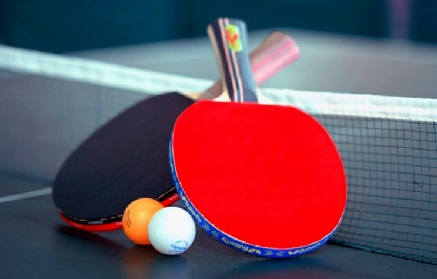

Eigen Website informatica van Max Wimmer
Startpagina
Binairstelsel
Kleurmodellen
Compressie
Inleiding
Mijn naam is Max Wimmer en ik heb deze website in de informatica les gebouwd. Mijn hobby's zijn tafeltennis spelen vissen en nog meer. Ik speel al tafeltennis sinds twee jaar en ik vind het erg leuk. Ook speel ik piano wat ik al vier jaar doe.
